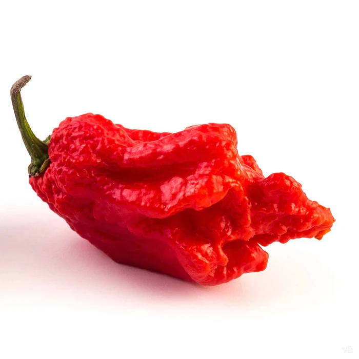

1.Carolina Reaper
Predchádzajúci svetový šampión, Carolina Reaper, bol porazený! sám sebou... Carolina Reaper je opäť oficiálne najštipľavejšou paprikou sveta.
Pôvodne sa v rebríčku najštipľavejších papričiek sveta umiestnila v roku 2013, v roku 2018 bol Reaper opäť testovaný s ešte vyšším SHU. (Presne o 71 000 SHU vyššie) Vďaka tomu sa Reaper opäť stal najhorúcejším na svete!
Bol vyšľachtený na horúčosť a tou aj je, s priemerným SHU 1 641 000 SHU a maximom 2,2 milióna SHU!
Uveďme si scovilleho hodnotenie v perspektíve: Paprička Carolina Reaper je 200x pálivejšia ako paprička Jalapeno #WorldsHottestPepper Už pri pohľade na obrázky vyššie je jasné, že ide o poriadne ostrú papričku. Paprika Carolina Reaper má jedinečný chvostík, ktorý sa nepodobá na žiadnu inú papriku, a každý struk je iný! Túto šialenú pálivosť získava vďaka tomu, že je krížencom papriky Ghost a červenej papriky Habanero. Táto paprička však nie je len pálivá, ale má aj vynikajúcu ovocnú chuť. Teda skôr, ako vám roztopí tvár.
2.Trinidad Moruga Scorpion
Prímo z pekelných hlbín pochádzajúca zmes Trinidad Scorpion Moruga Blend, alias Moruga Scorpion, je vzácna vyhľadávaná paprika, ktorá bola objavená len nedávno.
Pochádza z krajiny Moruga v Trinidade a Tobagu. Keď sa do tohto hrozivého chilli zahryznete, pálivosť nikdy neprestane narastať.
Tejto paprike síce chýba žihadlo Reaper, ale nenechajte sa tým oklamať. Škorpión Moruga je rovnako pálivý ako smrťák Carolina.
3.7 Pot Douglah
V paprikovej komunite je známa ako jedna z najštipľavejších paprík s najlepšou chuťou.
Paprika 7 Pot Douglah je najštipľavejšia paprika, ktorú môžete nájsť a ktorá nie je červená.
Najpálivejšie "superpálivé" papriky sú tradične červené, ale paprička Douglah sa vzpiera tomu, že je hnedá A škorpľavo pálivá.
Čerstvou, sušenou alebo práškovou paprikou Douglah nemôžete nič pokaziť na žiadnom jedle.
Známa je tiež ako 7 Pod Douglah, Čokoládová 7 Pod alebo 7 Pot Brown.
4.7 Pot Primo
Pot 7 Primo je veľmi výrazný svojím dlhým chudým "chvostom".
Túto papriku vytvoril záhradník Troy Primeaux.
Niektorí pestovatelia papriky sa pokúsili napodobniť vzhľad papriky Primo tým, že vyšľachtili vlastnú papriku, ktorá má dlhý chvost.
Keď sa na túto papriku len pozriete, viete, že bude neskutočne pálivá. Zhodou okolností sa nápadne podobá na papriku The Carolina Reaper...
5.Trinidad Scorpion “Butch T”
Trinidadský škorpión Butch T je predchádzajúcim držiteľom Guinnessovho rekordu (2011) z Austrálie.
Nie je pochýb o tom, že je šialene pálivá, ale iné papriky sú preukázateľne pálivejšie.
Je výstižne pomenovaná vďaka žihadlu škorpióna, ktoré sa nachádza na špičke papriky, a tiež vďaka jej tvorcovi Butchovi Taylorovi.
Pálenie tejto papriky sa nepodobá žiadnej inej.
Paprička Trinidad Scorpion Butch T páli, akoby ste prehltli tisíc sĺnc.
6.Naga Viper
Naga ViperNaga Viper je mimoriadne vzácna paprika pestovaná v Spojenom kráľovstve. Hybridom mnohých rôznych paprík a dlhoročným krížovým opeľovaním vznikla táto odroda "Super HOT" papriky.
Pred uvedením na trh nebola nikdy úplne stabilizovaná, takže sa očakáva variabilita strukov.
7.Ghost Pepper (Bhut Jolokia)
Paprika Ghost je najznámejšou "super pálivou" paprikou, pretože sa o nej v minulosti písalo v tlači.
Jeho popularita explodovala na YouTube a iných sociálnych sieťach, kde paprikári v rámci výzvy jedli celé papričky Ghost Peppers.
Jedná sa o prvú papriku, ktorá bola vedecky otestovaná na viac ako 1 milión scoville.
Mnohí sa mylne domnievajú, že paprika Ghost Pepper je stále najštipľavejšou paprikou na svete, tento zoznam však ukazuje, že to tak ani zďaleka nie je.
Toto nie je rok 2007. Ak máte priateľov, ktorí si stále myslia, že paprika Ghost Pepper je najštipľavejšia paprika, podeľte sa s nimi o túto stránku.
Nenechajte sa však zmiasť tým, ako nízko sa nachádza v zozname, pretože stále dokáže zraziť na kolená dospelého muža.
8.7 Pot Barrackpore
Paprika 7 Pot Barrackpore je jednou z najštipľavejších paprík 7 Pot.
Táto paprika pochádza z mesta Chaguanas v Trinidade a Tobagu.
Mnoho týchto "superpálivých" papričiek pochádza z tohto regiónu.
9.7 Pot Red(Giant)
7 hrncov bolo pomenovaných podľa toho, že dokážu ohriať 7 hrncov guláša, a to sa aj podarilo! Existuje 100 odrôd, ktoré vznikli krížením tejto odrody s inými paprikami. Medzi niektoré odrody patrí 7 Pot Jonah, 7 Pot Yellow, 7 Pot Katie, 7 Pot Barrackpore a nespočetné množstvo ďalších.
10.Red Savina Habanero
V prvých rokoch super hots bola červená Savina Habanero KRÁĽOM!
Titul najštipľavejšej papriky na svete držala od roku 1994 do roku 2006. 12 rokov!
Červená Savina bola odvtedy zosadená z trónu a v pálivosti ju predbehlo mnoho papričiek, ale dodnes je to jedna z mojich najobľúbenejších papričiek na pestovanie, pretože má dokonalú rovnováhu pálivosti a chuti.
Červená Savina sa len tesne dostala do Top 10, ale robí to módne vďaka svojej skvelej chuti a extrémnej pálivosti.